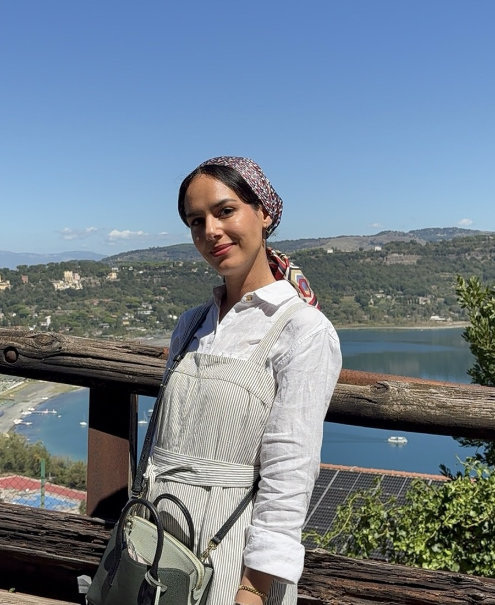
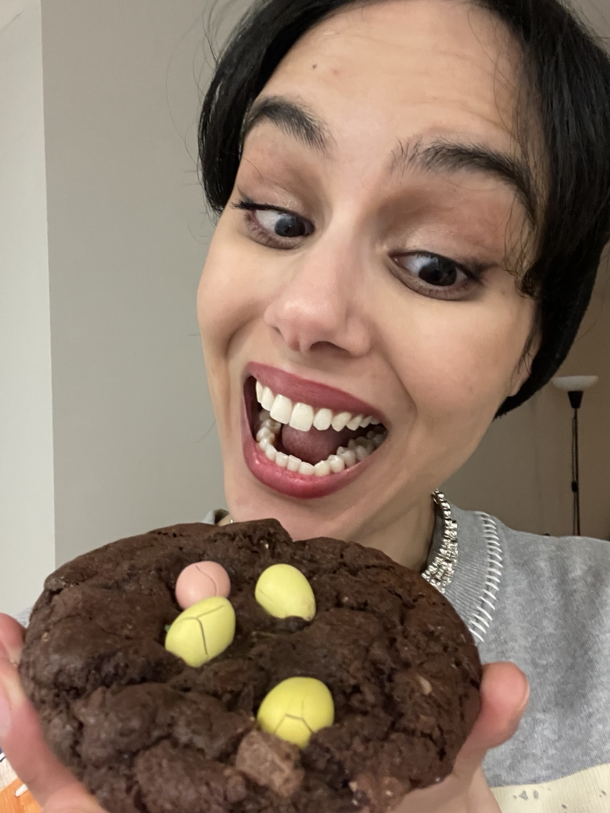

CUSTOMER EXPERIENCE↗
2.57% → 1.66%
Fewer reasons to call.
Connected product signals, customer behaviour and frontline feedback to what teams actually prioritized.
~36% lower customer call rateBell Canada · enterprise scale
People. Product. AI. Outcomes that matter.

Tap one. See what moved.
Connected product signals, customer behaviour and frontline feedback to what teams actually prioritized.
These are outcomes from my work at Bell, with cross-functional teams. See my résumé ↗
See what happens when AI handles the repeat work and people make the call.
Start with the customer, the friction and a number worth improving. Then decide what to build.
Align product, engineering, operations and partners around evidence, ownership and decisions.
Pilot, measure, improve and support adoption. A launch is the beginning, not the finish line.
I help teams turn complex technology and AI initiatives into reliable, adopted solutions with measurable business and customer impact.
I grew from hands-on product quality into release leadership, enterprise programs, customer metrics and practical AI. I’m at my best when the answer crosses teams and someone needs to connect the dots. Based in Canada, open to meaningful opportunities internationally, including relocation to the UAE.
Meet me on LinkedIn ↗
Five perspectives. Pick one.
If you have difficult problems to solve, or challenges to overcome, or complexity that needs to be tamed, or customers to impress, you will benefit from inviting Mariam into your team.